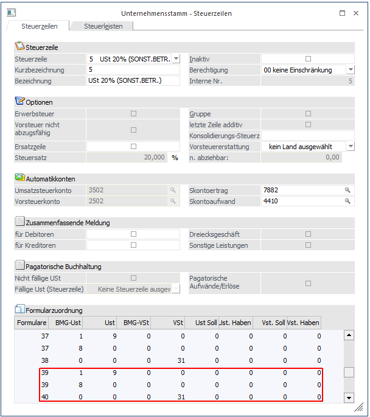
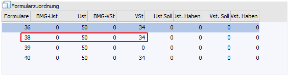
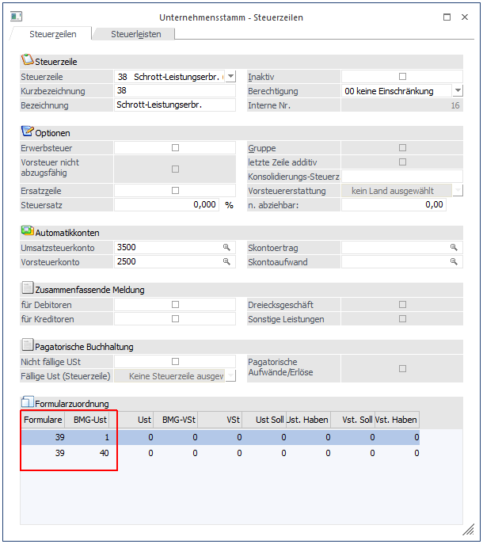
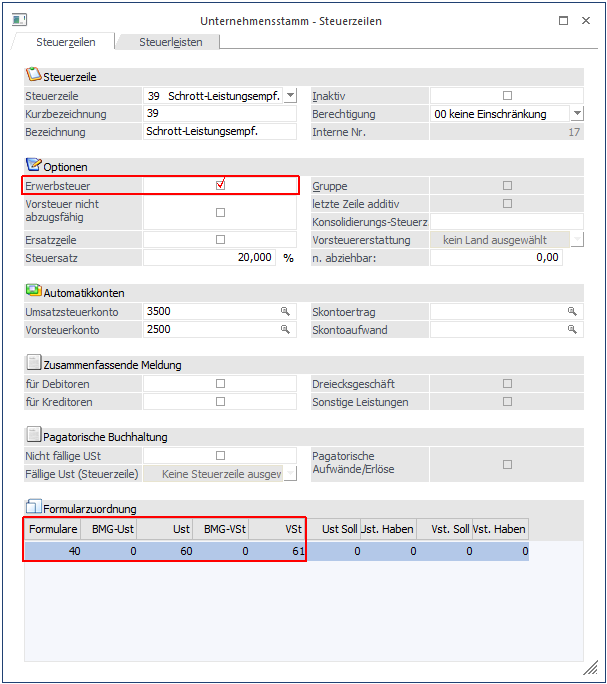
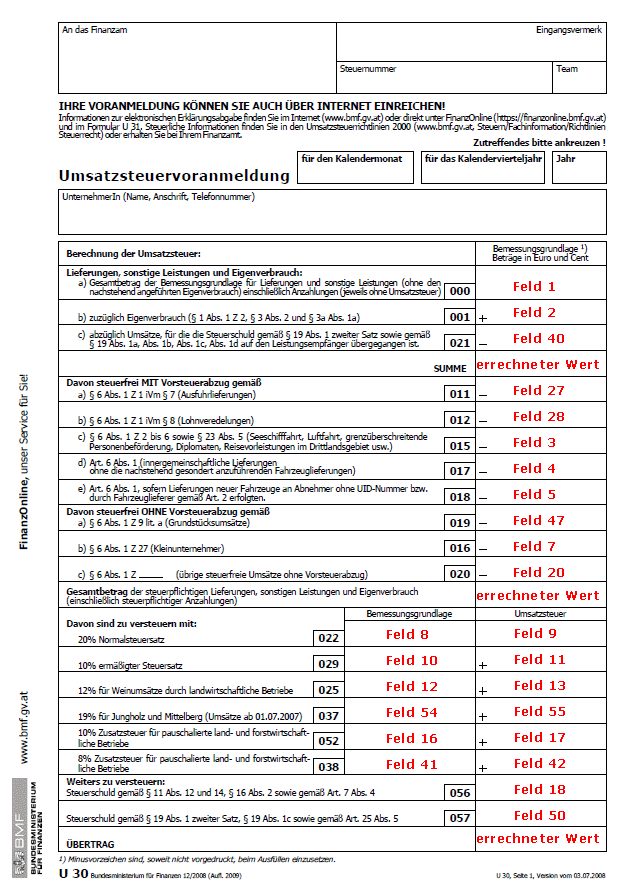
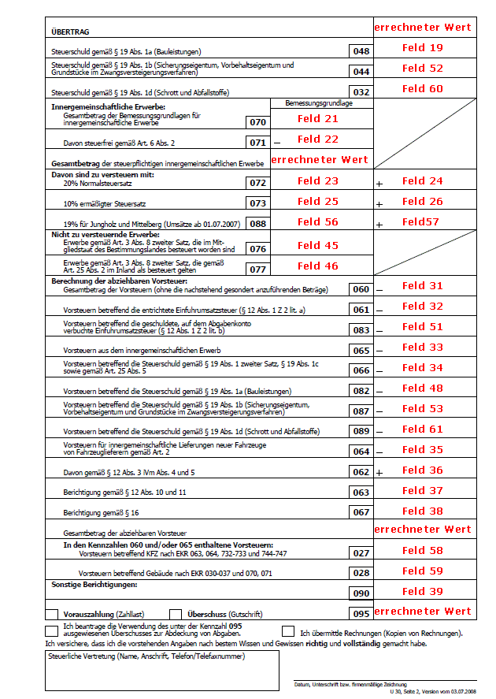

Die Umsatzsteuervoranmeldung umfasst 2 Seiten, wobei in der aktuellen Änderung die Seite 2 um die Kennzahlen 032 und 089 (Steuerschuld gem. §19 Abs. 1d Schrott und Abfallstoffe) erweitert wurde.
Weiters wurden die Kennzahlen 056 sowie 057 auf die erste Seite "verschoben".
Beim erstmaligen Öffnen des Unternehmensstamms oder der Umsatzsteuervoranmeldung werden die bereits angelegten Formularpositionen der Formulare 37 und 38 (UVA Österreich ab 01/2008) für die neuen Formulare 39 und 40 übernommen.

Werden die beiden Kennzahlen 056 und 057 bereits in einer Steuerzeile angesprochen, so ist hier zu beachten, dass die Zuweisung zum UVA-Formular entsprechend manuell geändert werden muss! Ebenso sind diese beiden Kennzahlen in der Berechnung des Übertrages (errechneter Wert auf Seite 2 - Formular 40) zu berücksichtigen!
Beispiel einer Steuerzeile die die Kennzahl 057 verwendet
Für die Ausgabe des UVA-Formulars bis 12/2008 befindet sich die Kennzahl 057 auf der zweiten Seite des UVA-Formulars. Dies entspricht dem Formular mit der Nr. 38 und der Position 50.

Für die Ausgabe des UVA-Formulars ab 01/2009 befindet sich die Kennzahl 057 nun auf der ersten Seite des UVA-Formulars. Dies entspricht nun dem Formular mit der Nr. 39 und der Position 50 (die Position bleibt gleich).
Nachdem die Position 50 aber auch am Übertrag der zweiten Seite berücksichtigt werden muss, muss die Position 50 ebenfalls am Formular 40 (= 2. Seite) zugewiesen werden.

Für die Position 34 (= Kennzahl 066) ergibt sich keine Änderung da für dieses Feld keine Änderungen durchgeführt wurden.
Schrott-Umsatzsteuerverordnung
Die neuen Kennzahlen 032 sowie 089 finden Anwendung wie folgt:
Bei den von der Schrott-Umsatzsteuerverordnung, BGBl. II Nr. 129/2007, erfassten Umsätzen kommt es zum Übergang der Steuerschuld unabhängig davon, ob ein inländischer oder ausländischer leistender Unternehmer vorliegt und ob ein inländischer oder ausländischer Unternehmer Leistungsempfänger ist. Zu einem Übergang der Steuerschuld kann es allerdings nur kommen, wenn eine im Inland steuerbare und steuerpflichtige Leistung erbracht wird.
Grundsätzlich kommt für die vom Übergang der Steuerschuld erfassten Umsätze der Normalsteuersatz zur Anwendung. In Ausnahmefällen kann es im Bereich der von der Verordnung erfassten sonstigen Leistungen zur Anwendung des ermäßigten Steuersatzes kommen.
Wie bei allen anderen Fällen des Übergangs der Steuerschuld ist auch im gegenständlichen neuen Anwendungsfall die Rechnung netto (ohne USt) zu legen und in der Rechnung (neben der UID-Nummer des leistenden Unternehmers) auch die UID-Nummer des Leistungsempfängers anzuführen (unabhängig von der Höhe des Rechnungsbetrages) sowie auf die Steuerschuldnerschaft des Leistungsempfängers hinzuweisen (siehe § 11 Abs. 1a UStG 1994 idF des BudgetbegleitG 2007). Dasselbe gilt bei Abrechnung mittels Gutschrift. Es handelt sich hierbei um Formvorschriften. Zum Übergang der Steuerschuld und zum allfälligen Vorsteuerabzug hinsichtlich der übergegangenen Steuer kommt es unabhängig davon, ob eine ordnungsgemäß ausgestellte Rechnung oder überhaupt eine Rechnung vorliegt.
Der leistende Unternehmer erklärt die Bemessungsgrundlage für diese Umsätze unter Kennzahl 000 und zieht diese Umsätze unter Kennzahl 021 wieder ab.
Beispiel einer Steuerzeile bzw. deren Zuweisung zum UVA-Formular für den Leistungserbringer:

Der vorsteuerabzugsberechtigte Leistungsempfänger kann in derselben Umsatzsteuervoranmeldung (Steuererklärung), in der er die übergegangene Steuer erklärt (unter Kennzahl 032), diese Steuer als Vorsteuer geltend machen (Kennzahl 089).
Beispiel einer Steuerzeile bzw. deren Zuweisung zum UVA-Formular für den Leistungsempfänger:

Ø Erklärung zum Formular
Alle im Formular zu bedruckenden Felder sind mit Positionsnummern belegt, die dementsprechend in den jeweiligen Steuerzeilen hinterlegt sind. D.h. die Kennzahl 060 ist der Positionsnummer 31 zugeordnet, dementsprechend findet sich in der Steuerzeile der vorigen Abbildung die Nummer 60 am Formular 40 in der Spalte USt.
Hinweis
Positionen, die einen negativen Wert hätten, und dadurch als Berichtigung in der Kennzahl 067 oder 090 ausgewiesen werden, werden am Formular mit 0,00 angedruckt
Eine detaillierte Beschreibung, woraus sich die einzelnen errechneten Werte ergeben, finden Sie nach den folgenden Grafiken zu den neuen UVA-Formularen, wo die Belegung dargestellt wird.

